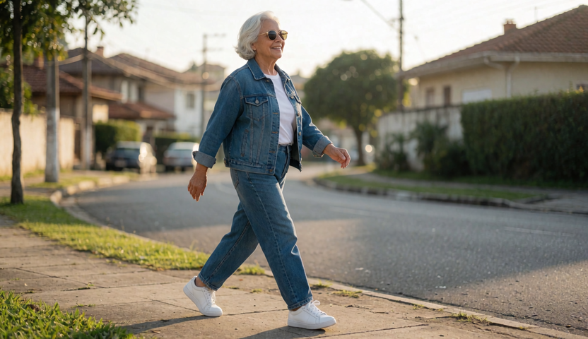
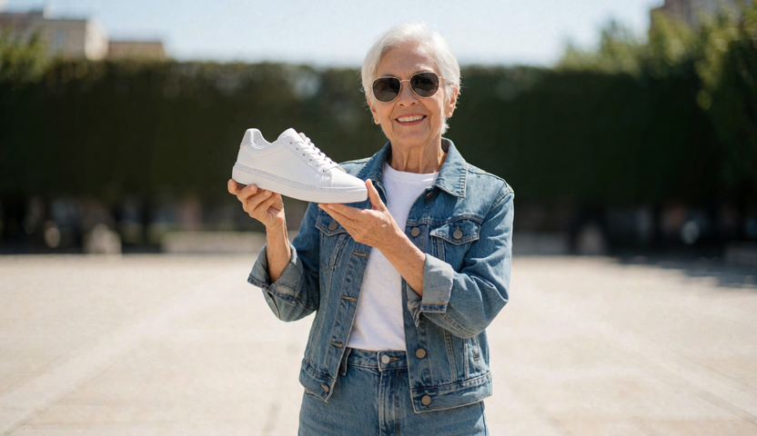
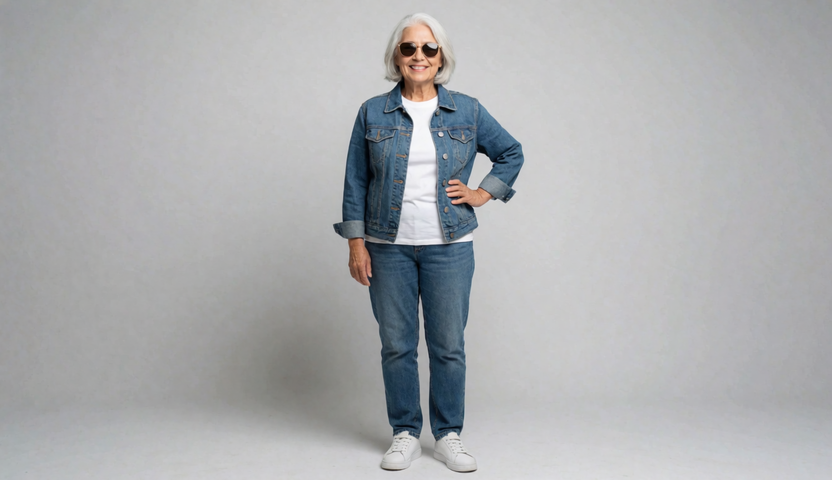
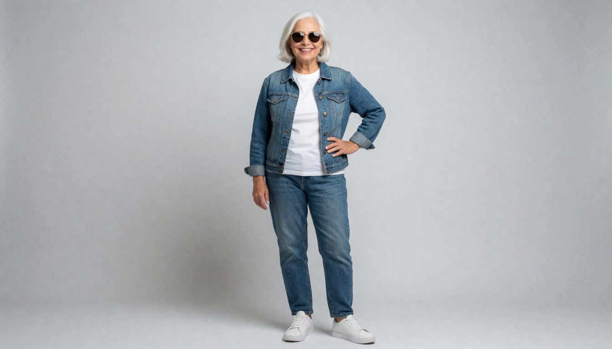
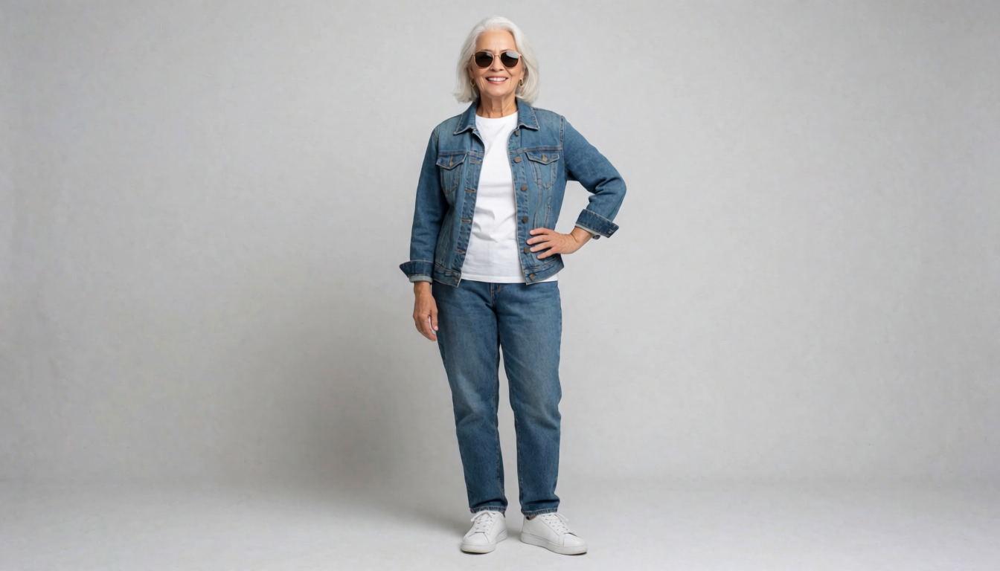

Pipeline 100% local na RTX 3070 (8 GB): reels viral de dança baixado da web, personagem nova criada no Krea 2, coreografia transferida com MiniMax H3 R2V — e um comercial de 40 s em plano contínuo para provar que dá pra fazer vídeo longo na 8 GB.
Novo · v26 · out/2026
Dois vídeos independentes, personagens novos criados no MOSS-Image: Téo (barista, "o pedido impossível") e Nina (tatuadora, "a primeira tatuagem"). Cadeia latente da v25 + LoRA Natural Face & Speech (boca sempre em movimento — corrige o defeito da v25) + QA por take com re-roll automático: whisper confere as palavras-chave e um check de consistência de cena reprova take que abandona o contexto pinado (pegou e corrigiu 2 takes sozinho). Os dois reels e o pipeline →
v25 · out/2026
Take único de 32 s sem mudança de qualquer tipo: 1 raiz R2V + 3 extensões que continuam o mesmo latent via pins MCtx do comfyui-obvpm (39 frames finais do take anterior como âncoras masked), com a foto da personagem como referência em todos os takes e câmera travada declarada em todo prompt. Mesma cena, mesma roupa, diff máximo entre frames 9,8, diálogo contínuo 0–32 s. O take, a cadeia e as métricas →
v24 · out/2026
30s de storytelling contínuo por personagem com Forced Audio: o áudio é pré-gravado, travado no latent (VAEEncodeAudio → SetLatentNoiseMask → LTXVConcatAVLatent) e o vídeo é gerado para casar com a fala. QA whisper: diálogos transcritos 0–30s. Bia e Lia →
Novo · v14 · out/2026
Após a água generativa falhar em 3 versões (incluindo LoRAs na v13), a v14 mudou de arma: Blender Cycles renderiza a água com refração física real (IOR 1.33) — indistinguível de fotografia. A IA cuida de pessoas e produto. 2 reels de 20 s (novo formato) com Isa e Nando, atuação 9/10, falas transcritas. A pesquisa, o still CG e o protocolo anti-crash →
Novo · v13 · out/2026
Conta Civitai criada com Gmail temporário (emailnator) + API key validada: os LoRAs de água
antes presos no login agora baixam com ?token=. Beauty of rain (Wan 5B e H3)
entrou em A/B de gêmeos perfeitos (mesma seed ± LoRA). Produto: NASCENTE, água mineral —
Lena na chuva e Caio no pós-chuva, respingos com gravidade real. Bônus: SageAttention 1.0.6
com kernel validado na 3070.
O desbloqueio, o A/B e os 2 reels →
Novo · v12 · out/2026
Busca direta na API do Hugging Face (novo método, dribla o bloqueio da Civitai) revelou o LoRA de física espacial do H3 — testado em A/B com veredito negativo honesto (H3 puro 9/10 vs LoRA 8/10 no snap). Produto: QUEBRA, chocolate ao leite — Nina e Téo com atuação 9/10, fala transcrita perfeita, snap com física 9/10 e marca legível em plena queda. Territórios novos, A/B e os 2 reels →
Novo · v11 · out/2026
A fraqueza apontada na v10 (traços de IA na atuação) foi resolvida com o LoRA fal Realism-People empilhado no H3 + direção calma: Rafa com 10/10 de atuação e zero traços, Clara 8,5–10. Produto: SOSSEGO, vela aromática — 2 reels de 10 s, chama com física 9/10, rótulo 10/10. O mapa de LoRAs, os reels e a receita final →
Novo · v10 · out/2026
Novo formato: 1 produto + 2 influenciadoras digitais + 2 reels de 10 s. Bia (calma) e Duda (energética) falam PT-BR com lip sync gerado localmente (H3 + still MOSS), estética UGC phone-look com #publi. Produto: LUZ, sérum facial (textura viscosa — o regime que a IA acerta, após a pesquisa da rodada). QA: rostos 9–10/10, falas transcritas por whisper, rótulo 10/10. Os 2 reels e a pesquisa →
Novo · v9 · out/2026
A crítica da v8 (tudo em slow-mo, gravidade irreal) virou pesquisa e conserto: prompt de energia (física 9/10 no QA), re-temporização por FPS (velocidade como parâmetro de direção: 36/30/24fps por take) e variedade de andamento com herói lento curto e assumido. Produto: SOL, suco de laranja — kit 16:9 + 9:16 + jingle, VO auditada por transcrição. O A/B antes/depois, o kit e a jornada v1→v9 →
Novo · v8 · out/2026
A tese do Wan 14B Lightning foi julgada na máquina real: init 14 min/expert + 850 s/step — inviável na 8 GB (workflow validado e pesos mantidos p/ o futuro). O kit seguiu no Turbo: MATTA, açaí de verdade — 16:9 + 9:16 + jingle a 48 fps/LUFS, e o QA ganhou transcrição de áudio (whisper audita a locução do master final). Veredito 14B, kit e jornada v1→v8 →
Novo · v6 · out/2026
A peça que faltava: locução em português gerada localmente (Piper TTS na CPU) mixada à bossa nova do Ace-Step, 3 variantes do jingle para escolher, e o teste honesto do take contínuo de 10 s a 1080p (>2 h — inviável, documentado). Produto: RAIZ, vinho tinto — 1080p · 48 fps · QA 9–10/10. Dois masters, jingles e a jornada v1→v6 →
Novo · v5 · out/2026
Testes controlados validaram as reservas da v4 e o comercial subiu para Full HD nativo (1920×1080): Turbo a 1080p com QA 10/10, texto embossado estável sob dolly ("AMARGO 70% CACAU" nítido em movimento), e um bônus audacioso — jingle cantado em português (Ace-Step) como master alternativo ao instrumental. 48 fps, ~37 min de takes. Os dois masters e a jornada v1→v5 →
Novo · v4 · out/2026
O gargalo de VAE decode caiu (VAEDecodeTiled: 22 → 4,4 s/frame) e o comercial ficou 100% 704p nativo: hero Wan fp16 em 11,6 min (vs 68 na v3) + 3 takes Turbo em 3 min cada, trilha instrumental gerada por IA (Ace-Step 1.5, 20 s de render) mixada ao diegético do H3, 48 fps, QA 8–10/10. Produto: ÂMBAR, mel silvestre. Benchmark, timeline e a jornada v1→v4 →
Novo · v3 · out/2026
Pesquisa da v3 testou a destilação Turbo do Wan 5B (sampling 56s! mas decode-bound — resultado negativo documentado), RIFE a 48 fps no master (✓ nativo) e mapeou Ace-Step para trilha (v4). Produto novo: GAROA, cerveja artesanal IPA — 20 s · 720p · 48 fps · trilha com direção musical (arco guitarra→percussão→acorde) · QA por take com verificação letra-por-letra. A jornada v1→v2→v3 completa →
Novo · v2 · out/2026
Reavaliação do v1 (steps errados da LoRA turbo, 480p, zoompan trêmulo, órbita em produto) → matriz A/B com QA por visão (H3@4st 7/10 · H3@8st 9/10 · Wan 2.2@704p 9/10) e um novo comercial híbrido: Wan 2.2 no shot hero + H3@8st nos demais + áudio H3, end card MOSS upscalado 4×, 720p/20 s — SERRA, café de altitude. Diagnóstico completo, matriz e o filme →
Novo · out/2026
Novo modelo open-weights da OpenMOSS (DiT 5B, Apache-2.0) testado a fundo no ComfyUI atualizado para v0.42.3: 6 stills publicitários com texto renderizado perfeitamente dentro da imagem (inclusive "Onde a floresta mora em você." com acentos), 2 takes de vídeo com áudio via MiniMax H3 I2V e um comercial de 20 s em 720p para a marca fictícia MOSS Eau de Parfum — tudo local na RTX 3070. Página completa do projeto →
Entregável 1 · Motion transfer
À esquerda, os 10 segundos exatos do vídeo de dança viral baixado. À direita, o MiniMax H3 R2V (reference-to-video) transferindo a coreografia inteira para a personagem criada no Krea 2 — mesma coreografia, mesmo enquadramento, mesma trilha sonora original (o H3 gera vídeo com áudio junto).
Criada localmente com Krea 2 Turbo 12B int8 (~22 s por imagem na 3070). A seed 41000 foi a vencedora entre 3 candidatas:



Da esquerda p/ direita: seed 41000 (escolhida), 41007, 41013.
Full body photograph of a stylish Brazilian grandmother in her early seventies, short silver-white hair, warm confident smile, gold-rimmed sunglasses, blue denim jacket over a white t-shirt, relaxed blue jeans, crisp white sneakers, standing with one hand on her hip, plain light gray studio background, soft even lighting, photorealistic, sharp focus seed 41000 · 1344x768 · 8 steps · cfg 1 · ~22 s (quente) na RTX 3070
The stylish Brazilian grandmother in her early seventies from <Picture 1>, with short silver-white hair, gold-rimmed sunglasses, blue denim jacket over a white t-shirt, relaxed blue jeans and crisp white sneakers, performs exactly the same dance choreography as the dancer in <Video 1>, copying every move, every body roll, hip movement and arm gesture with the same timing and energy. Same room, same framing and same static camera as <Video 1>, full body visible from head to feet. Her face, hair and outfit stay sharp, stable and consistent throughout the video. Keep the music soundtrack from <Video 1> exactly as it is. ref_image = personagem (Picture 1) · ref_video = clipe de dança (Video 1) com áudio 832x480 · 243 frames @ 24 fps · 4 steps (LoRA turbo) · seed 20261016 · ~46 min na RTX 3070
Entregável 2 · Vídeo longo (40 s)
Para demonstrar vídeo mais longo numa placa de 8 GB, usei a técnica de storyboard em cadeia com âncoras compartilhadas: cada take de 10 s entra com first_frame = last_frame do take anterior (âncoras geradas no Krea 2 com a mesma seed 41000 e a mesma descrição palavra por palavra), e o ComfyUI processa a fila encadeada com o modelo quente. 4 takes × 10 s = 40 segundos com fala em português com lip sync, música amapiano gerada junto e um corte seco no meio (como num comercial de verdade).
Takes 1–2 (rua) e 3–4 (praça) são planos contínuos entre si; a junção rua→praça é um corte de montagem.


A stylish Brazilian grandmother in her early seventies, short silver-white hair, gold-rimmed sunglasses, blue denim jacket over a white t-shirt, relaxed blue jeans and crisp white sneakers, on a quiet Brazilian suburban street with small colorful houses in warm morning light. She finishes tying the laces of her white sneakers sitting on the front step of the yellow house, then stands up, stretches her back with a confident smile and puts her hands on her hips looking straight at the camera. Her face stays sharp, stable and consistent throughout the video. Camera: slow gentle push-in from wide to medium. Ambient sound: morning birds, a distant rooster, and a soft uplifting amapiano piano melody starting.
… (mesma frase de personagem e cenário, palavra por palavra) … She starts walking briskly down the sidewalk with light dance steps, swinging her arms in rhythm and bobbing her head to the beat, greeting a neighbor who waves back, ending mid-stride with one foot planted forward and a cheerful expression. Camera: smooth tracking shot alongside her at steady walking pace. Audio: the upbeat amapiano beat grows with deep bass and shakers, her footsteps landing in rhythm.
… (personagem idêntica; cenário: small sunny neighborhood plaza with palm trees and a bench in golden morning light) … She dances joyfully with full amapiano energy - body rolls, hip swings and wave-like arm movements - building up to a triumphant finish with both arms raised high while neighbors clap around her. Camera: static wide shot. Audio: uplifting amapiano music at full energy with clapping and cheerful voices.
… She lowers her arms, catches her breath with a proud smile, picks up one white sneaker from the bench and
holds it up at chest height presenting it to the camera, speaking Brazilian Portuguese with accurate lip sync,
saying: FLOW. Idade não define o ritmo. With the word FLOW written in large bold white capital letters
appearing on screen behind her. Camera: slow push-in to a medium shot. Audio: the amapiano music resolves
warmly, palm leaves rustling in the morning breeze.
Frase soletrada como texto ("the word FLOW written in large bold white capital letters") — só dizer
"logo FLOW" embaralha as letras. Fala com acentuação correta: o TTS lê a grafia literal.Como foi feito
reels viral (YouTube, yt-dlp) Krea 2 Turbo 12B int8 (t2i)
│ recorte 10 s · 832x480 · 24 fps · ffmpeg │ seed 41000 → vovó + 6 âncoras do comercial
▼ ▼
└──────────────► MiniMax H3 R2V ◄─────────────────┘ MiniMax H3 FL2VA (i2v âncora dupla)
ref2va int8 + LoRA 4step fl2va int8 + LoRA 8step
~46 min / 10 s 4 takes × ~8 min = ~32 min
▼ ▼
dance/dance_vovo.mp4 comercial/flow_commercial.mp4 (concat ffmpeg)
GPU: RTX 3070 8 GB · engine ComfyUI 0.34.0 na porta 8189 (python 3.13, torch cu130) · modelos Krea 2 / H3 / Qwen3-VL reaproveitados do StabilityMatrix via extra_model_paths.yaml — nenhum download novo foi necessário.